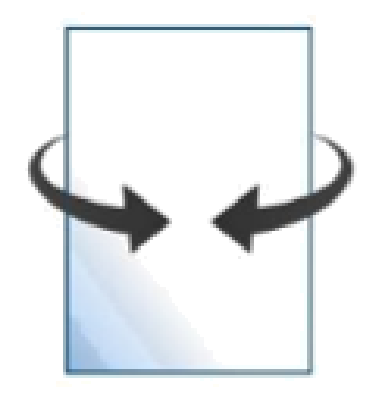
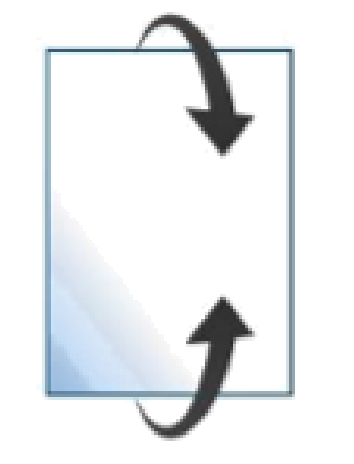

מגלגלים דף לגליל
44
שאלה מתוך תוכנית הלימודים
אורכו של דף נייר מלבני הוא 30 ס״מ, ורוחבו 21 ס״מ.
מגלגלים את הדף למעטפת גליל, כך שרוחב הדף הוא בסיס הגליל.

מהו רדיוס הבסיס? מהו נפח הגליל?
מגלגלים את הדף למעטפת גליל, כך שאורך הדף הוא בסיס הגליל.

מהו רדיוס הבסיס? מהו נפח הגליל?